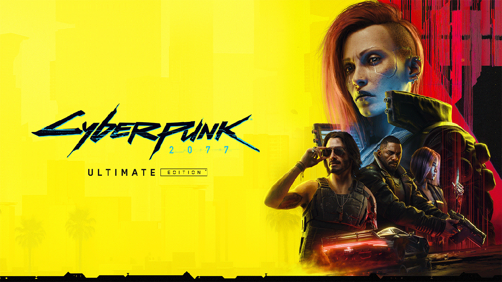

The Outlast Trials

The Outlast Trials é um jogo eletrônico vindouro de tiro em primeira pessoa e survival horror psicológico desenvolvido e publicado pela Red Barrels.
Data de lançamento inicial: 18 de maio de 2023
Plataformas: PlayStation 5, PlayStation 4, Xbox One, Xbox Series X e Series S, Microsoft Windows
Desenvolvedor: Red Barrels Studio
Modo: Jogo multijogador
Série: Outlast Estúdio: Red Barrels Studio
Estúdio: Red Barrels Studio
Gêneros: Survival horror, Jogo eletrônico independente, Jogo eletrônico de aventura
League of Legends

Data de lançamento inicial: 27 de outubro de 2009
League of Legends é um jogo eletrônico do gênero multiplayer online battle arena desenvolvido e publicado pela Riot Games. Foi lançado em outubro de 2009 para Microsoft Windows e em março de 2013 para macOS.
Desenvolvedor: Riot Games
Gêneros: Arena de batalha multijogador em linha, RPG eletrônico de ação
Projetistas: Steve Feak, Mark Yetter, Tom Cadwell, David Capurro, Christina Norman, Rob Garrett
THE SIMS 4

The Sims 4 é um jogo eletrônico de simulação social de 2014 desenvolvido pela Maxis e publicado pela Electronic Arts. É o quarto título principal da série The Sims e é a sequência de The Sims 3.
Desenvolvedores: Maxis, The Sims Studio, Blind Squirrel Games
Plataformas: PlayStation 4, Microsoft Windows, Xbox One, Mac OS
Estúdio: Electronic Arts
Gêneros: Simulador de vida, Gratuito para jogar, MAIS
Projetistas: Eric Holmberg-Weidler, Matt Yang
Data de lançamento inicial: 2 de setembro de 2014
Série: The Sims
Garena Free Fire

Free Fire é um jogo eletrônico mobile de ação-aventura do gênero battle royale, criado pela desenvolvedora vietnamita 111dots Studio e publicado pela Garena. O jogo obteve um beta aberto em novembro de 2017 e foi lançado oficialmente para Android de iOS em 4 de dezembro de 2017.
Data de lançamento inicial: 4 de dezembro de 2017
Desenvolvedores: Garena International, 111dots Studio
Gêneros: Battle royale, Jogo eletrônico de tiro
Estúdios: Garena International, Garena International
Plataformas: Android, iOS
Modos de jogo: Multijogador
Motor: Unity 3D
Terraria

Terraria é um jogo eletrônico RPG de ação-aventura independente produzido pela desenvolvedora de jogos Re-Logic. Possui como características a exploração, artesanato, construção de estruturas e combate a monstros perigosos em um mundo 2D gerado de forma procedural.
Plataformas: Android, Nintendo Switch, PlayStation 4, iOS, MAIS
Estúdios: Re-Logic, AK Tronic, 505 Games, Chunsoft
Desenvolvedores: Re-Logic, Pipeworks Studio, Engine Software, Codeglue, 505 Mobile S.r.l
Gêneros: Jogo eletrônico de ação e aventura, Jogabilidade não linear
Artista(s): Jamison "Lazure" Hayes; Andrew "Redigit" Spinks; Victor "Crowno" Moura; Jim Tommy Myhre Kjexrud
Starbound
Starbound é um jogo de ação e aventura desenvolvido e publicado pela Chucklefish. Starbound ocorre em um universo bidimensional gerado processualmente onde o jogador é capaz de explorar para obter novas armas, armaduras e itens, e para visitar cidades e vilas habitadas por várias formas de vida inteligente.
Desenvolvedor: Chucklefish
Estúdio: Chucklefish Ltd
Data de lançamento inicial: 22 de julho de 2016
Gêneros: Sandbox, Jogo eletrônico independente, MAIS
Projetista: Finn Brice
Plataformas: Microsoft Windows, Linux, macOS, GeForce Now, Xbox One, Mac OS
Cyberpunk 2077
Cyberpunk 2077 é um jogo eletrônico de RPG de ação desenvolvido pela CD Projekt Red e publicado pela CD Projekt. A história do jogo é ambientada em Night City, um mundo aberto situado no universo fictício de Cyberpunk.
Plataformas: PlayStation 5, PlayStation 4, Xbox Series X e Series S, Xbox One, GeForce Now, Microsoft Windows
Desenvolvedores: CD Projekt RED, CD Projekt, CD Projekt Sp. z o.o
Gêneros: RPG eletrônico, Jogo eletrônico de tiro, Jogo eletrônico de luta, Jogo eletrônico de ação e aventura
Data de lançamento inicial: 10 de dezembro de 2020
Projetista: Konrad Tomaszkiewicz
Hogwarts Legacy
Hogwarts Legacy é um game de ação imersivo ambientado no mundo dos livros do Harry Potter, escritos por J.K. Rowling. O jogador embarca em uma jornada por locais novos e familiares, enquanto explora ambientes com gráficos deslumbrantes, podendo ter a chance de descobrir e encontrar incríveis animais e seres fantásticos. O jogo vem com a incrível novidade de personalizar os personagens, com características, gênero, voz, escolher e customizar a varinha ideal, dependendo da criatividade dos jogadores, e ainda, terão a chance de escolher uma das famosas casas de Hogwarts (Grifinória, Lufa-Lufa, Corvinal e Sonserina), podendo aprender e manipular feitiços, elevar habilidades e criar poções. Após alguns anos de atrasos e complicações, o game foi lançado em 10 de fevereiro de 2023 e duas semanas após seu lançamento, o jogo vendeu cerca de 12 milhões de cópias.
Mighty Morphin Power Rangers (Super Nintendo)

Mighty Morphin Power Rangers (Super Nintendo) é um jogo de ação de rolagem lateral, onde o jogador embarca em uma jornada podendo escolher um dos 5 rangers (Jason, Billy, Zack, Trini e Kimberly), a cada segmento, derrotando os patrulheiros de massa e monstros (Boss) para salvar a cidade das ameaças da bruxa espacial Rita Repulsa. Usando o botão de seleção, o jogador desbloqueia a arma exclusiva de cada ranger, mas drena a saúde a cada uso, e nos segmentos finais, os jogadores ainda tem a chance de lutar com o Megazord contra os vilões finais do game. O jogo foi lançado em várias plataformas em novembro de 1994 e muitos elogiaram o design simples com o estilo semelhante ao programa de TV, movimentação e controles dinâmicos, e a atenção ao tornar cada personagem único, com movimentos e armas de cada um dos personagens.
Street Fighter 2
Street Fighter 2 é um jogo de luta, podendo jogar sozinho ou em dupla, desenvolvido pela Capcom e lançado em várias plataformas de Arcade em 1991. E o jogo, em relação ao primeiro, melhorou vários dos conceitos introduzidos, incluindo o uso de golpes especiais usando comandos de Joystick com seis botões, enquanto ofereceu aos jogadores uma seleção de vários personagens jogáveis, como o Ryu, Chun-li, Guile, Bison, e dentre vários outros personagens icônicos, tendo, cada um, o seu próprio estilo de luta, com introduções ao sistema de Combos. Em 1994, o jogo tinha sido jogado por mais de 25 milhões de pessoas somente nos Estados Unidos, e mais de 15 milhões de unidades de Software foram vendidos para todo o mundo. Street Fighter 2 é reconhecido como um dos melhores jogos eletrônicos dos anos 90 e de sempre, tanto que é considerado como um dos mais importantes jogos de luta já criado, tendo sido um marco incrível para a cultura pop em geral.
Amor Doce
Criado por ChinoMiKo, Amor Doce surgiu em meados de 2011. Este Otome Game teve origem francesa, e seu nome original é “Amour Sucrè”. A empresa responsável pela distribuição do jogo, assim como outras da mesma franquia, é a Beemoov. AD está disponível para todas as plataformas, como: Android, iOS e, ainda, navegador da web.
Desenvolvedor: Beemoov
Gêneros: Otome game, Simulador de romance, Jogo eletrônico de aventura, Jogo de simulação
Data de lançamento inicial: 16 de março de 2011
Estúdio: Beemoov
Plataformas: Navegador web, Microsoft Windows